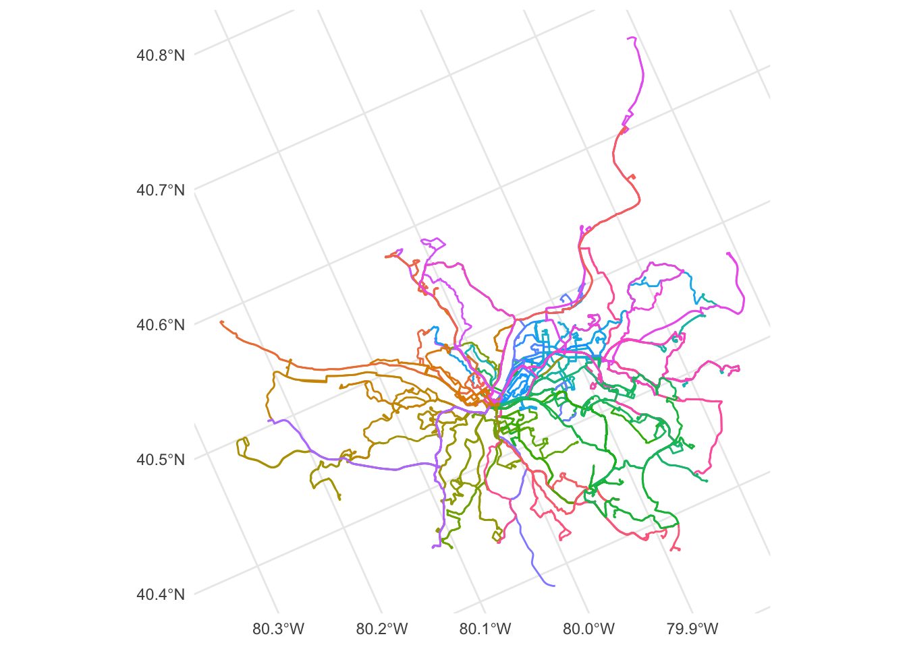
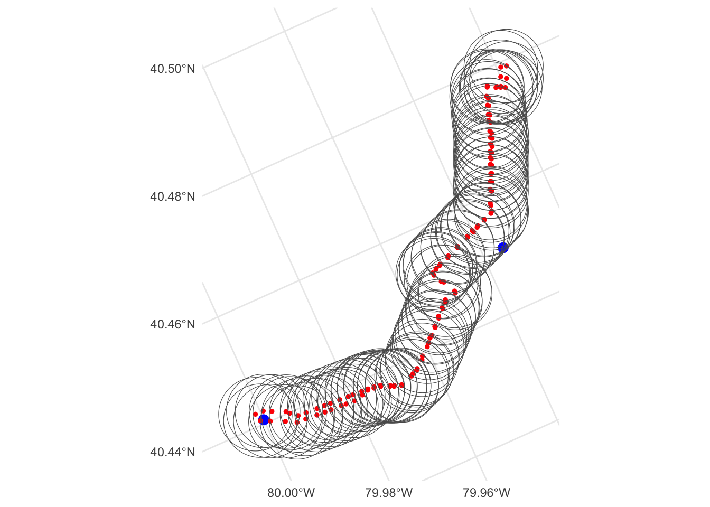
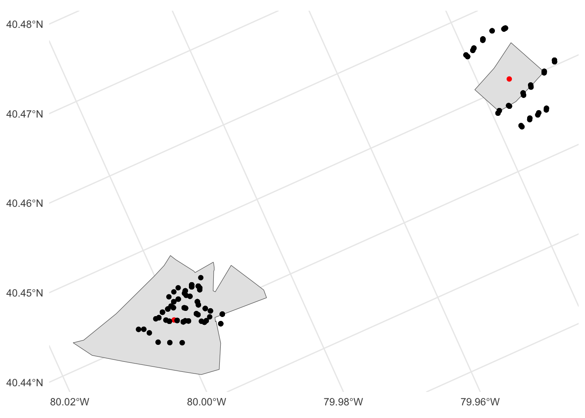
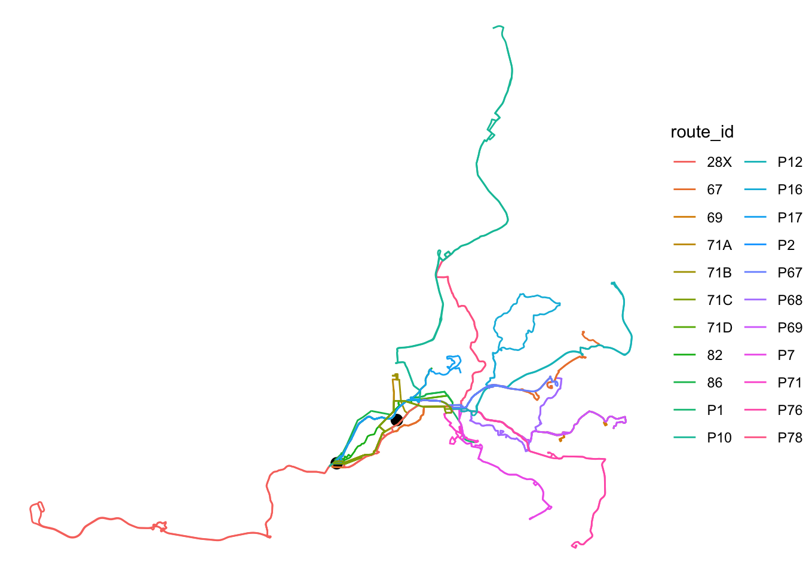
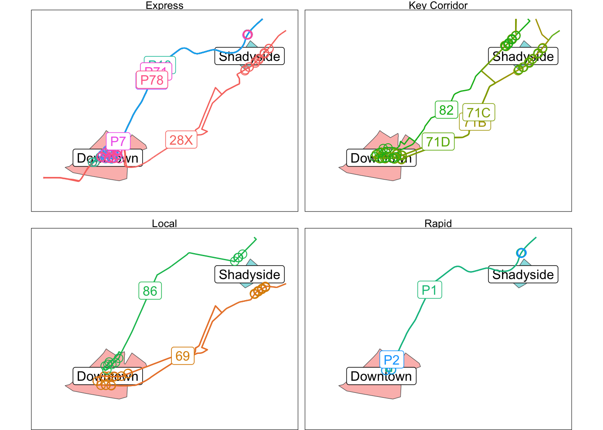

library(tidyverse)
library(sf)
library(tigris)
library(janitor)
library(tidycensus)
library(leaflet)
options(tigris_use_cache = TRUE,
scipen = 999,
digits = 2)In this post I will use transit line and stop data from the WPRDC to map connections between census tracts. I access the census data via {tidycensus}, which contains information about the commuter connections between census tracts.
This code loads the transit line data from the WPRDC. I create the full_route_name_id column and set the coordinate reference system to 4326.
##load transit data
transit_lines <- st_read("post_data/shapefiles/transit_lines/PAAC_Routes_1909.shp") %>%
clean_names() %>%
mutate_at(vars(-all_of(c("geometry"))), as.character) %>%
rename(route_id = route,
service_type = type_serv) %>%
distinct(service_type, route_id, route_name, geometry) %>%
mutate(full_route_name_id = str_c(route_id, route_name, sep = " ")) %>%
st_transform(3488)Reading layer `PAAC_Routes_1909' from data source
`/Users/conorotompkins/Documents/github_repos/ctompkins_quarto_blog/posts/visualizing-transit-connections-between-pittsburgh-census-tracts/post_data/shapefiles/transit_lines/PAAC_Routes_1909.shp'
using driver `ESRI Shapefile'
Simple feature collection with 102 features and 13 fields
Geometry type: MULTILINESTRING
Dimension: XY
Bounding box: xmin: 1300000 ymin: 350000 xmax: 1400000 ymax: 490000
Projected CRS: NAD83(2011) / Pennsylvania South (ftUS)transit_linesSimple feature collection with 102 features and 4 fields
Geometry type: MULTILINESTRING
Dimension: XY
Bounding box: xmin: 3300000 ymin: 960000 xmax: 3300000 ymax: 1000000
Projected CRS: NAD83(NSRS2007) / California Albers
First 10 features:
service_type route_id route_name
1 Local 26 Chartiers
2 Local 27 Fairywood
3 Local 40 Mt. Washington
4 Key Corridor 61C McKeesport - Homestead
5 Express 65 Squirrel Hill
6 Key Corridor 71A Negley
7 Key Corridor 71D Hamilton
8 Local 74 Homewood - Squirrel Hill
9 Local 83 Bedford Hill
10 Local 89 Garfield Commons
geometry full_route_name_id
1 MULTILINESTRING ((3293319 9... 26 Chartiers
2 MULTILINESTRING ((3293319 9... 27 Fairywood
3 MULTILINESTRING ((3294223 9... 40 Mt. Washington
4 MULTILINESTRING ((3293614 9... 61C McKeesport - Homestead
5 MULTILINESTRING ((3300806 9... 65 Squirrel Hill
6 MULTILINESTRING ((3293614 9... 71A Negley
7 MULTILINESTRING ((3293614 9... 71D Hamilton
8 MULTILINESTRING ((3298497 9... 74 Homewood - Squirrel Hill
9 MULTILINESTRING ((3293794 9... 83 Bedford Hill
10 MULTILINESTRING ((3298392 9... 89 Garfield CommonsThis is what the transit lines look like on a basic map:
transit_lines %>%
ggplot(aes(color = route_id)) +
geom_sf() +
guides(color = FALSE) +
theme_minimal()
This creates a table of route_id and service_type that I will join against later.
df_service_type <- transit_lines %>%
distinct(service_type, route_id, full_route_name_id) %>%
st_drop_geometry()This code loads the transit stop shapefile from the WPRDC:
transit_stops <- st_read("post_data/shapefiles/transit_stops/PAAC_Stops_1909.shp") %>%
st_transform(3488) %>%
clean_names() %>%
mutate_at(vars(-all_of(c("geometry", "routes_cou"))), as.character) %>%
select(stop_name, routes_served = routes_ser, routes_cou, geometry) %>%
distinct(stop_name, routes_served = routes_served, routes_cou, geometry)Reading layer `PAAC_Stops_1909' from data source
`/Users/conorotompkins/Documents/github_repos/ctompkins_quarto_blog/posts/visualizing-transit-connections-between-pittsburgh-census-tracts/post_data/shapefiles/transit_stops/PAAC_Stops_1909.shp'
using driver `ESRI Shapefile'
Simple feature collection with 6946 features and 17 fields
Geometry type: POINT
Dimension: XY
Bounding box: xmin: 1300000 ymin: 350000 xmax: 1400000 ymax: 490000
Projected CRS: NAD83(2011) / Pennsylvania South (ftUS)transit_stopsSimple feature collection with 6946 features and 3 fields
Geometry type: POINT
Dimension: XY
Bounding box: xmin: 3300000 ymin: 960000 xmax: 3300000 ymax: 1000000
Projected CRS: NAD83(NSRS2007) / California Albers
First 10 features:
stop_name routes_served routes_cou
1 26TH ST AT PENN AVE FS (SPRING WAY) 54, 88, 91 3
2 28TH ST AT LIBERTY AVE 54 1
3 32ND ST AT SPRING WAY 54, 88, 91 3
4 40TH ST AT BUTLER ST 93 1
5 40TH ST AT DAVIDSON ST FS 93 1
6 40TH ST OPP DAVIDSON ST 64, 93 2
7 4TH ST AT COREY AVE 59 1
8 FIFTH AVE AT AIKEN AVE 28X, 71B, 71D 3
9 FIFTH AVE AT AMBERSON AVE 28X, 71B, 71D 3
10 FIFTH AVE AT BEECHWOOD BLVD 28X, 71D 2
geometry
1 POINT (3294762 976882)
2 POINT (3294959 977172)
3 POINT (3295178 977765)
4 POINT (3295366 978861)
5 POINT (3295502 978803)
6 POINT (3295495 978788)
7 POINT (3305461 976046)
8 POINT (3298449 977796)
9 POINT (3298126 977556)
10 POINT (3299655 978942)Much of the important data is stored in the routes_served column. This code pivots the data longer to make it easier to work with.
#identify maximum number of routes served by a stop
max_routes_served <- transit_stops %>%
summarize(max_routes = max(routes_cou)) %>%
pull(max_routes)
transit_stops %>%
filter(routes_cou == max_routes_served)Simple feature collection with 1 feature and 3 fields
Geometry type: POINT
Dimension: XY
Bounding box: xmin: 3300000 ymin: 980000 xmax: 3300000 ymax: 980000
Projected CRS: NAD83(NSRS2007) / California Albers
stop_name
1 EAST BUSWAY AT PENN STATION C
routes_served
1 1, 11, 15, 19L, 39, 40, 44, 6, P1, P10, P12, P16, P17, P2, P67, P68, P69, P7, P71, P76, P78
routes_cou geometry
1 21 POINT (3294168 975311)#separate routes_served into multiple columns, one per route
transit_stops <- transit_stops %>%
separate(routes_served, sep = ", ", into = str_c("route_", 1:max_routes_served), extra = "merge", fill = "right")
transit_stopsSimple feature collection with 6946 features and 23 fields
Geometry type: POINT
Dimension: XY
Bounding box: xmin: 3300000 ymin: 960000 xmax: 3300000 ymax: 1000000
Projected CRS: NAD83(NSRS2007) / California Albers
First 10 features:
stop_name route_1 route_2 route_3 route_4 route_5
1 26TH ST AT PENN AVE FS (SPRING WAY) 54 88 91 <NA> <NA>
2 28TH ST AT LIBERTY AVE 54 <NA> <NA> <NA> <NA>
3 32ND ST AT SPRING WAY 54 88 91 <NA> <NA>
4 40TH ST AT BUTLER ST 93 <NA> <NA> <NA> <NA>
5 40TH ST AT DAVIDSON ST FS 93 <NA> <NA> <NA> <NA>
6 40TH ST OPP DAVIDSON ST 64 93 <NA> <NA> <NA>
7 4TH ST AT COREY AVE 59 <NA> <NA> <NA> <NA>
8 FIFTH AVE AT AIKEN AVE 28X 71B 71D <NA> <NA>
9 FIFTH AVE AT AMBERSON AVE 28X 71B 71D <NA> <NA>
10 FIFTH AVE AT BEECHWOOD BLVD 28X 71D <NA> <NA> <NA>
route_6 route_7 route_8 route_9 route_10 route_11 route_12 route_13 route_14
1 <NA> <NA> <NA> <NA> <NA> <NA> <NA> <NA> <NA>
2 <NA> <NA> <NA> <NA> <NA> <NA> <NA> <NA> <NA>
3 <NA> <NA> <NA> <NA> <NA> <NA> <NA> <NA> <NA>
4 <NA> <NA> <NA> <NA> <NA> <NA> <NA> <NA> <NA>
5 <NA> <NA> <NA> <NA> <NA> <NA> <NA> <NA> <NA>
6 <NA> <NA> <NA> <NA> <NA> <NA> <NA> <NA> <NA>
7 <NA> <NA> <NA> <NA> <NA> <NA> <NA> <NA> <NA>
8 <NA> <NA> <NA> <NA> <NA> <NA> <NA> <NA> <NA>
9 <NA> <NA> <NA> <NA> <NA> <NA> <NA> <NA> <NA>
10 <NA> <NA> <NA> <NA> <NA> <NA> <NA> <NA> <NA>
route_15 route_16 route_17 route_18 route_19 route_20 route_21 routes_cou
1 <NA> <NA> <NA> <NA> <NA> <NA> <NA> 3
2 <NA> <NA> <NA> <NA> <NA> <NA> <NA> 1
3 <NA> <NA> <NA> <NA> <NA> <NA> <NA> 3
4 <NA> <NA> <NA> <NA> <NA> <NA> <NA> 1
5 <NA> <NA> <NA> <NA> <NA> <NA> <NA> 1
6 <NA> <NA> <NA> <NA> <NA> <NA> <NA> 2
7 <NA> <NA> <NA> <NA> <NA> <NA> <NA> 1
8 <NA> <NA> <NA> <NA> <NA> <NA> <NA> 3
9 <NA> <NA> <NA> <NA> <NA> <NA> <NA> 3
10 <NA> <NA> <NA> <NA> <NA> <NA> <NA> 2
geometry
1 POINT (3294762 976882)
2 POINT (3294959 977172)
3 POINT (3295178 977765)
4 POINT (3295366 978861)
5 POINT (3295502 978803)
6 POINT (3295495 978788)
7 POINT (3305461 976046)
8 POINT (3298449 977796)
9 POINT (3298126 977556)
10 POINT (3299655 978942)transit_stops %>%
filter(routes_cou == max_routes_served)Simple feature collection with 1 feature and 23 fields
Geometry type: POINT
Dimension: XY
Bounding box: xmin: 3300000 ymin: 980000 xmax: 3300000 ymax: 980000
Projected CRS: NAD83(NSRS2007) / California Albers
stop_name route_1 route_2 route_3 route_4 route_5 route_6
1 EAST BUSWAY AT PENN STATION C 1 11 15 19L 39 40
route_7 route_8 route_9 route_10 route_11 route_12 route_13 route_14 route_15
1 44 6 P1 P10 P12 P16 P17 P2 P67
route_16 route_17 route_18 route_19 route_20 route_21 routes_cou
1 P68 P69 P7 P71 P76 P78 21
geometry
1 POINT (3294168 975311)#pivot data longer
transit_stops <- transit_stops %>%
pivot_longer(cols = starts_with("route_"), names_to = "route_number", values_to = "route_id") %>%
st_as_sf()
transit_stopsSimple feature collection with 145866 features and 4 fields
Geometry type: POINT
Dimension: XY
Bounding box: xmin: 3300000 ymin: 960000 xmax: 3300000 ymax: 1000000
Projected CRS: NAD83(NSRS2007) / California Albers
# A tibble: 145,866 × 5
stop_name routes_cou geometry route_number route_id
<chr> <dbl> <POINT [m]> <chr> <chr>
1 26TH ST AT PENN A… 3 (3294762 976882) route_1 54
2 26TH ST AT PENN A… 3 (3294762 976882) route_2 88
3 26TH ST AT PENN A… 3 (3294762 976882) route_3 91
4 26TH ST AT PENN A… 3 (3294762 976882) route_4 <NA>
5 26TH ST AT PENN A… 3 (3294762 976882) route_5 <NA>
6 26TH ST AT PENN A… 3 (3294762 976882) route_6 <NA>
7 26TH ST AT PENN A… 3 (3294762 976882) route_7 <NA>
8 26TH ST AT PENN A… 3 (3294762 976882) route_8 <NA>
9 26TH ST AT PENN A… 3 (3294762 976882) route_9 <NA>
10 26TH ST AT PENN A… 3 (3294762 976882) route_10 <NA>
# ℹ 145,856 more rowstransit_stops <- transit_stops %>%
filter(!is.na(route_id)) %>%
left_join(df_service_type)This code loads the census tract data via {tidycensus}. I choose the census tracts 42003020100 (Downtown) and 42003070300 (Shadyside).
#load tract data
allegheny_tracts <- get_decennial(geography = "tract",
variables = c(total_pop = "P001001"),
state = "PA",
county = "Allegheny County",
geometry = TRUE,
output = "wide",
year = 2010) %>%
mutate(name = case_when(GEOID == "42003020100" ~ "Downtown",
GEOID == "42003070300" ~ "Shadyside")) %>%
st_transform(3488)
#calculate centers of the tracts
allegheny_tracts_centroid <- allegheny_tracts %>%
mutate(name = case_when(GEOID == "42003020100" ~ "Downtown",
GEOID == "42003070300" ~ "Shadyside")) %>%
mutate(lon = map_dbl(geometry, ~st_centroid(.x)[[1]]),
lat = map_dbl(geometry, ~st_centroid(.x)[[2]])) %>%
st_drop_geometry() %>%
st_as_sf(coords = c("lon", "lat"), crs = 3488) %>%
st_transform(3488)
#creates table with geometry of the county border
allegheny <- allegheny_tracts %>%
summarize()commute_tracts <- allegheny_tracts %>%
filter(!is.na(name))
commute_centroids <- allegheny_tracts_centroid %>%
filter(!is.na(name))This code uses st_is_within_distance to find the transit stops that are within 700 meters of the center of the Downtown AND Shadyside census tracts.
df_stops_joined_distance <- transit_stops %>%
st_join(commute_centroids, st_is_within_distance, dist = 700, left = TRUE) %>%
arrange(route_id)
df_stops_joined_distanceSimple feature collection with 12087 features and 10 fields
Geometry type: POINT
Dimension: XY
Bounding box: xmin: 3300000 ymin: 960000 xmax: 3300000 ymax: 1000000
Projected CRS: NAD83(NSRS2007) / California Albers
# A tibble: 12,087 × 11
stop_name routes_cou geometry route_number route_id
<chr> <dbl> <POINT [m]> <chr> <chr>
1 WEST MIFFLIN GARA… 4 (3302630 969221) route_2 ""
2 LAYOVER PENN PARK… 12 (3294348 975649) route_2 ""
3 LAYOVER PENN PARK… 12 (3294348 975649) route_6 ""
4 LAYOVER PENN PARK… 12 (3294348 975649) route_8 ""
5 LAYOVER PENN PARK… 12 (3294348 975649) route_11 ""
6 4TH AVE AT 7TH ST 1 (3306225 995240) route_1 "1"
7 E 4TH AVE AT BOYD… 2 (3305254 999390) route_1 "1"
8 4TH AVE AT CENTRA… 1 (3306153 995343) route_1 "1"
9 E 4TH AVE AT LOCK… 2 (3305377 999550) route_1 "1"
10 E 4TH AVE AT WOOD… 2 (3305323 999479) route_1 "1"
# ℹ 12,077 more rows
# ℹ 6 more variables: service_type <chr>, full_route_name_id <chr>,
# GEOID <chr>, NAME <chr>, total_pop <dbl>, name <chr>df_stops_joined_distance <- df_stops_joined_distance %>%
filter(!is.na(name))
df_stops_joined_distanceSimple feature collection with 736 features and 10 fields
Geometry type: POINT
Dimension: XY
Bounding box: xmin: 3300000 ymin: 970000 xmax: 3300000 ymax: 980000
Projected CRS: NAD83(NSRS2007) / California Albers
# A tibble: 736 × 11
stop_name routes_cou geometry route_number route_id
* <chr> <dbl> <POINT [m]> <chr> <chr>
1 7TH ST AT FT DUQU… 9 (3293481 975066) route_1 1
2 7TH ST AT PENN AV… 4 (3293586 974931) route_1 1
3 LIBERTY AVE AT 7T… 8 (3293638 974904) route_1 1
4 LIBERTY AVE AT SM… 19 (3293846 975073) route_1 1
5 LIBERTY AVE AT WI… 18 (3293943 975161) route_1 1
6 LIBERTY AVE OPP 9… 20 (3293761 974994) route_1 1
7 LIBERTY AVE OPP S… 8 (3293856 975107) route_1 1
8 7TH ST AT FT DUQU… 9 (3293481 975066) route_2 11
9 7TH ST AT PENN AV… 4 (3293586 974931) route_2 11
10 LIBERTY AVE AT 7T… 8 (3293638 974904) route_2 11
# ℹ 726 more rows
# ℹ 6 more variables: service_type <chr>, full_route_name_id <chr>,
# GEOID <chr>, NAME <chr>, total_pop <dbl>, name <chr>df_route_filter <- df_stops_joined_distance %>%
st_drop_geometry() %>%
distinct(route_id, name) %>%
group_by(route_id) %>%
filter(n() >= 2) %>%
ungroup() %>%
distinct(route_id)
df_route_filter# A tibble: 22 × 1
route_id
<chr>
1 28X
2 67
3 69
4 71A
5 71B
6 71C
7 71D
8 82
9 86
10 P1
# ℹ 12 more rowsdf_stops_joined_distance <- df_stops_joined_distance %>%
semi_join(df_route_filter, by = c("route_id" = "route_id")) %>%
left_join(df_service_type)
df_stops_joined_distance <- df_stops_joined_distance %>%
mutate(stop_name_route_id_route_name = str_c(full_route_name_id, str_to_title(stop_name), sep = " - "))To help visualize how the join works, imagine a buffer around each point (transit stop). This shows the stops from 71A with a buffer:
st_crs(transit_stops)$units[1] "m"transit_stops %>%
mutate(geometry_buffered = st_buffer(geometry, dist = 700)) %>%
#st_transform(crs = 3488) %>%
filter(route_id == "71A") %>%
ggplot() +
geom_sf(data = commute_centroids,
color = "blue",
size = 3) +
geom_sf(color = "red", size = 1) +
geom_sf(aes(geometry = geometry_buffered),
fill = NA
) +
#coord_sf(crs = 4326) +
theme_minimal()
st_is_within_distance identifies which red points are within 700 meters of the blue points.
This shows the tracts, the tract centroids, and the transit stops within 700 meters of the centroids.
df_stops_joined_distance %>%
ggplot() +
geom_sf(data = commute_tracts) +
geom_sf(data = commute_centroids, color = "red") +
geom_sf() +
theme_minimal()
This filters on the transit lines served by the stops that successfully joined against the Downtown and Shadyside centroids:
commuter_transit_lines <- transit_lines %>%
semi_join(df_route_filter, by = c("route_id" = "route_id"))
commuter_transit_linesSimple feature collection with 22 features and 4 fields
Geometry type: MULTILINESTRING
Dimension: XY
Bounding box: xmin: 3300000 ymin: 970000 xmax: 3300000 ymax: 1000000
Projected CRS: NAD83(NSRS2007) / California Albers
First 10 features:
service_type route_id route_name full_route_name_id
1 Key Corridor 71A Negley 71A Negley
2 Key Corridor 71D Hamilton 71D Hamilton
3 Rapid P2 East Busway Short P2 East Busway Short
4 Express P78 Oakmont Flyer P78 Oakmont Flyer
5 Rapid P1 East Busway - All Stops P1 East Busway - All Stops
6 Key Corridor 71B Highland Park 71B Highland Park
7 Local 69 Trafford 69 Trafford
8 Local 86 Liberty 86 Liberty
9 Express P68 Braddock Hills Flyer P68 Braddock Hills Flyer
10 Express P69 Trafford Flyer P69 Trafford Flyer
geometry
1 MULTILINESTRING ((3293614 9...
2 MULTILINESTRING ((3293614 9...
3 MULTILINESTRING ((3293856 9...
4 MULTILINESTRING ((3294045 9...
5 MULTILINESTRING ((3294045 9...
6 MULTILINESTRING ((3295547 9...
7 MULTILINESTRING ((3310878 9...
8 MULTILINESTRING ((3294134 9...
9 MULTILINESTRING ((3294049 9...
10 MULTILINESTRING ((3294049 9...These are the transit lines that serve the two tracts:
commute_centroids %>%
ggplot() +
geom_sf(size = 3) +
geom_sf(data = commuter_transit_lines, aes(color = route_id)) +
theme_void()
This sets the bounding box for the final static map:
commute_zoom <- commute_tracts %>%
st_buffer(dist = 700) %>%
st_bbox()This crops the transit lines to only include the parts within the bounding box:
commuter_transit_lines %>%
st_crop(commute_zoom)Simple feature collection with 22 features and 4 fields
Geometry type: GEOMETRY
Dimension: XY
Bounding box: xmin: 3300000 ymin: 970000 xmax: 3300000 ymax: 980000
Projected CRS: NAD83(NSRS2007) / California Albers
First 10 features:
service_type route_id route_name full_route_name_id
1 Key Corridor 71A Negley 71A Negley
2 Key Corridor 71D Hamilton 71D Hamilton
3 Rapid P2 East Busway Short P2 East Busway Short
4 Express P78 Oakmont Flyer P78 Oakmont Flyer
5 Rapid P1 East Busway - All Stops P1 East Busway - All Stops
6 Key Corridor 71B Highland Park 71B Highland Park
7 Local 69 Trafford 69 Trafford
8 Local 86 Liberty 86 Liberty
9 Express P68 Braddock Hills Flyer P68 Braddock Hills Flyer
10 Express P69 Trafford Flyer P69 Trafford Flyer
geometry
1 MULTILINESTRING ((3293614 9...
2 MULTILINESTRING ((3293614 9...
3 MULTILINESTRING ((3293856 9...
4 LINESTRING (3294045 975240,...
5 MULTILINESTRING ((3294045 9...
6 MULTILINESTRING ((3295547 9...
7 MULTILINESTRING ((3299435 9...
8 MULTILINESTRING ((3294134 9...
9 MULTILINESTRING ((3294049 9...
10 MULTILINESTRING ((3294049 9...This plots the Downtown and Shadyside census tracts and the transit lines and stops that serve them:
p <- commuter_transit_lines %>%
st_crop(commute_zoom) %>%
ggplot() +
geom_sf(data = allegheny, fill = NA) +
geom_sf(data = commute_tracts, aes(fill = name), size = 1, alpha = .5) +
geom_sf_label(data = commute_centroids, aes(label = name)) +
geom_sf(aes(color = route_id)) +
geom_sf(data = st_jitter(df_stops_joined_distance), aes(color = route_id), shape = 21, size = 3) +
geom_sf_label(aes(color = route_id, label = route_id)) +
coord_sf(xlim = c(commute_zoom[1], commute_zoom[3]),
ylim = c(commute_zoom[2], commute_zoom[4])) +
facet_wrap(~service_type) +
guides(color = FALSE,
fill = FALSE) +
theme_void() +
theme(panel.border = element_rect(color = "black", fill = NA))
p
You can use this interactive map made with leaflet to explore the transit lines and stops that connect Downtown and Shadyside:
library(widgetframe)
#transform geometries to crs 4326
allegheny <- st_transform(allegheny, crs = 4326)
commute_tracts <- st_transform(commute_tracts, crs = 4326)
commuter_transit_lines <- st_transform(commuter_transit_lines, crs = 4326)
df_stops_joined_distance <- st_transform(df_stops_joined_distance, crs = 4326)
commute_tracts <- st_transform(commute_tracts, crs = 4326)
commute_zoom <- commute_tracts %>%
st_buffer(dist = .01) %>%
st_bbox()
names(commute_zoom) <- NULL
###leaflet
transit_lines_palette <- colorFactor(palette = "Set1", domain = commuter_transit_lines$full_route_name_id)
tract_palette <- colorFactor(palette = "Set1", domain = commute_tracts$GEOID)
interactive_map <- leaflet() %>%
addProviderTiles(providers$CartoDB.Positron) %>%
addPolygons(data = allegheny,
color = "#444444",
stroke = TRUE,
fillOpacity = 0,
opacity = 1,
weight = 2,
group = "Census tracts") %>%
addPolygons(data = commute_tracts,
#color
color = NA,
#fill
fillColor = ~tract_palette(GEOID),
fillOpacity = .3,
#label
label = commute_tracts$name,
group = "Census tracts") %>%
addPolylines(data = commuter_transit_lines,
color = ~transit_lines_palette(full_route_name_id),
label = commuter_transit_lines$full_route_name_id,
#highlight
highlightOptions = highlightOptions(weight = 10, bringToFront = TRUE),
group = "Transit lines and stops"
) %>%
addCircles(data = df_stops_joined_distance,
radius = 3,
color = ~transit_lines_palette(full_route_name_id),
#highlight
highlightOptions = highlightOptions(weight = 10, bringToFront = TRUE),
#label
label = str_to_title(df_stops_joined_distance$stop_name_route_id_route_name),
group = "Transit lines and stops") %>%
addLayersControl(overlayGroups = c("Census tracts","Transit lines and stops"), position = "topleft",
options = layersControlOptions(collapsed = FALSE)) %>%
addMiniMap() %>%
fitBounds(lng1 = commute_zoom[[1]], lat1 = commute_zoom[[2]], lng2 = commute_zoom[[3]], lat2 = commute_zoom[[4]])
frameWidget(interactive_map)